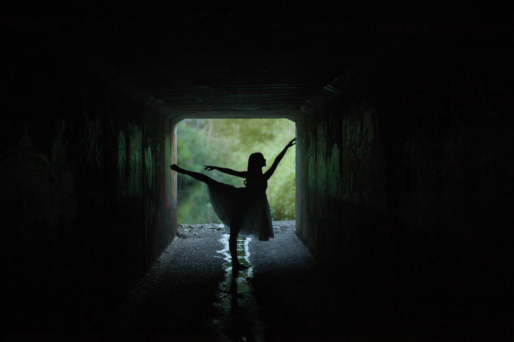
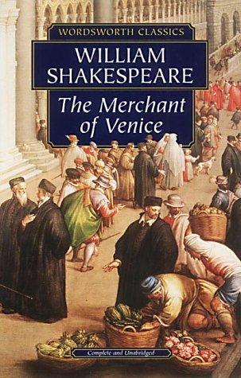
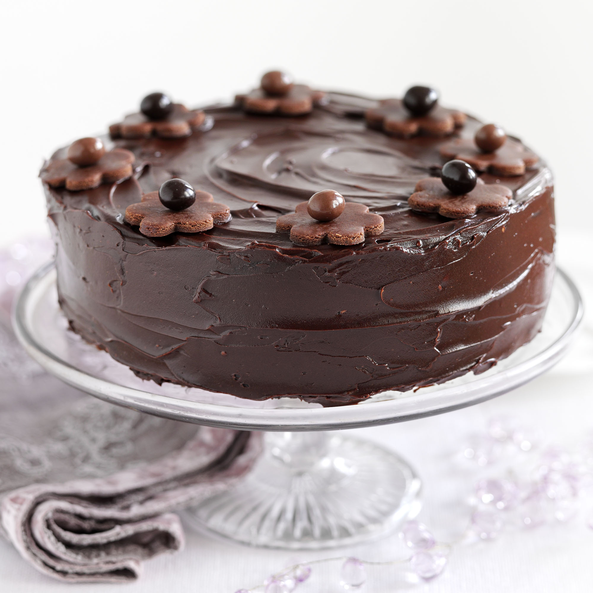

This blog is a reflection of my passions, experiences, and creative explorations—a space where dance, literature, and baking come together! I started this blog to share my journey, from mastering new dance moves to diving into thought-provoking books and experimenting in the kitchen.Here, you'll find: My love for Hip-Hop, Bollywood, and Classical fusion. Book Reviews, recommendations, and literary discussions.Baking experiments, recipes, and kitchen adventures.Through my experiences in dance, literature, and baking, I hope to spark your curiosity, encourage you to try new things, and share moments of joy and creativity. Whether it's experimenting with a dance style, getting lost in a compelling book, or whipping up a delightful dessert, I believe every experience adds a fresh perspective to life. Let's embark on this journey together!
Blog Post section
Blog 1:
From Hip-Hop Grooves to Classical Grace:
I have always been drawn to the high-energy moves of Hip-Hop and the vibrant expressions of Bollywood dance. The footwork, the attitude, the swag—it just felt like the perfect way to express myself. But when I first attempted classical dance, something unexpected happened—I felt an effortless connection. The grace, the storytelling, the rhythm—it suited my personality in ways I never imagined!

Dance has always evolved by blending cultures and styles. Some of the most iconic dance movements today stem from a fusion of classical and modern influences. Bollywood itself is a melting pot—drawing from Indian classical forms like Bharatanatyam and Kathak, mixed with global styles like Jazz, Hip-Hop, and Salsa.
Exploring classical dance as a Hip-Hop and Bollywood enthusiast felt foreign yet intriguing. The precise mudras and tatkar were challenging, but I found a rhythm that resonated with me, deepening my appreciation for storytelling through abhinaya.
I draw inspiration from Shakti Mohan's fusion of Kathak and Hip-Hop, Michael Jackson's impact on Bollywood, Hrithik Roshan's freestyle in Bang Bang, and Remo D'Souza's choreography in ABCD, showcasing the beauty of blending dance styles.
Exploring different dance forms taught me that Hip-Hop offers freedom, while Classical dance instills discipline and grace. Fusion enhances tradition rather than replacing it, and the best dancers continuously experiment and evolve.
Dance has evolved by blending cultural styles, with Bollywood itself being a mix of classical, folk, hip-hop, jazz, and contemporary dance. Madhuri Dixit's Kathak-infused grace, Prabhudeva's fusion of Western street dance with Indian elements, and movies like ABCD and Street Dancer 3D highlight the beauty of merging dance forms.
Blog 2:
Shakespeare's Timeless Tales:
The Merchant of Venice
William Shakespeare, the master of storytelling, has shaped literature with his timeless plays. Whether it's love, power, justice, or magic, his works continue to resonate across generations. Among his many masterpieces, The Merchant of Venice and The Tempest stand out for their rich themes, unforgettable characters, and deep moral questions.

A complex tale of justice vs. mercy, featuring the famous courtroom scene where Portia delivers “The quality of mercy is not strained.”
Shylock, the Jewish moneylender, is both a villain and a victim, making us question morality and bias.
The contrast between Venetian commerce and romantic ideals creates a layered story about human nature.
The Tempest
A story of betrayal, forgiveness, and magic, set on an enchanted island where Prospero controls fate.
Themes of colonialism are subtly woven into Prospero's rule over Caliban—was he a benevolent ruler or an oppressor?
Ariel, the spirit, represents freedom and servitude, making us rethink what it means to be truly free.
The Merchant of Venice feels realistic, dealing with justice, human greed, and social discrimination.The Tempest is fantastical, exploring magic, revenge, and redemption.Both plays emphasize power and control, but one through law (Merchant) and the other through supernatural means (Tempest).
Blog 3:
The Chocolate Cake Experiment!
Baking has always fascinated me, but I had never attempted a full-fledged dessert from scratch—until I decided to make a chocolate cake for a birthday celebration. From mixing the batter to decorating it with sparkle balls and extra chocolates, it was a journey full of learning (and delicious mistakes!).

Here is the Step-by-Step Journey:
Mixing the Batter: I carefully measured flour, cocoa powder, sugar, eggs, and butter, making sure to get the right consistency.
Baking: The oven was set, and I watched eagerly as the cake rose perfectly (or so I thought!).
Decorating: After letting it cool, I covered it in rich chocolate frosting, added chocolate shavings, sparkle balls, and extra treats to make it look as good as it tasted.
There are some challenges which I faced during this process:
Getting the cake texture just right was tricky—at first, it was too dry, but adding a little extra milk saved it!
Spreading the frosting evenly without making a mess took patience.
Sticking all the decorations properly was harder than I expected!
I have also Learned a Lesson that Baking is not just about the recipe but also technique and timing. The cake turned out delicious, and seeing everyone enjoy it made the effort worth it!
About Me
Hello! I'm Alankriti, a passionate explorer of dance, literature, and culinary adventures, with a tech-driven mindset as a B.Tech CSE student. My world revolves around expressing emotions through movement, diving into the depths of stories, and experimenting in the kitchen with sweet and savory delights!
My Interests!
Dancing: I love Hip-Hop and Bollywood, but discovering classical dance showed me how beautifully different styles can blend.
Reading: Shakespeare's The Merchant of Venice and The Tempest made me appreciate the power of words and timeless storytelling.
Baking: From chocolate cakes to homemade donuts, I enjoy experimenting in the kitchen and crafting sweet moments.
What's this Blog About
This blog is my creative space where I share:
My Dancing journey with dance styles, experiences, and inspirations.
Book reviews, recommendations, and literary insights.
Baking experiments, recipes, and fun kitchen adventures.
Whether you're here for dance stories, book reviews or baking tips, I hope this blog inspires you to explore your own passions. Let's keep exploring, experimenting, and creating magic!